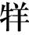

李斯者，楚上蔡人也。年少时，为郡小吏，见吏舍厕中鼠食不洁，近人犬，数惊恐之。斯入仓，观仓中鼠，食积粟，居大庑之下，不见人犬之忧。于是李斯乃叹曰：“人之贤不肖譬如鼠矣，在所自处耳！”
乃从荀卿学帝王之术。学已成，度楚王不足事，而六国皆弱，无可为建功者，欲西入秦。辞于荀卿曰：“斯闻得时无怠，今万乘方争时，游者主事。今秦王欲吞天下，称帝而治，此布衣【布衣：指平民百姓。】驰骛【驰骛：奔走。】之时而游说者之秋也。处卑贱之位而计不为者，此禽鹿【禽鹿：犹“禽兽”。】视肉，人面而能强行者耳。故诟莫大于卑贱，而悲莫甚于穷困。久处卑贱之位，困苦之地，非世而恶利，自托于无为，此非士之情也。故斯将西说秦王矣。”
至秦，会庄襄王卒，李斯乃求为秦相文信侯吕不韦舍人；不韦贤之，任以为郎。李斯因以得说，说秦王曰：“胥人【胥人：小人，没有才能的人。】者，去其几【几：同“机”。】也。成大功者，在因瑕衅而遂忍之。昔者秦穆公之霸，终不东并六国者，何也？诸侯尚众，周德未衰，故五伯迭兴，更尊周室。自秦孝公以来，周室卑微，诸侯相兼，关东为六国，秦之乘胜役诸侯，盖六世矣。今诸侯服秦，譬若郡县。夫以秦之强，大王之贤，由【由：通“犹”。如同，好像。】灶上骚【骚：通“扫”。】除，足以灭诸侯，成帝业，为天下一统，此万世之一时也。今怠而不急就，诸侯复强，相聚约从，虽有黄帝之贤，不能并也。”秦王乃拜斯为长史，听其计，阴遣谋士赍持金玉以游说诸侯。诸侯名士可下以财者，厚遗结之；不肯者，利剑刺之。离其君臣之计，秦王乃使其良将随其后。秦王拜斯为客卿。
陈仁锡：“先秦文章当以李斯为第一，太史公作传，载其书五篇，绝工之文也。《李斯传》是秦外纪，凡秦之兴亡与皆具矣。”
李斯，是楚国上蔡人。他年少时，曾经在郡里当过小吏，看见办公处所附近厕所里的老鼠吃不干净的东西，每当有人或者狗走近的时候，老鼠多次受惊逃跑。李斯又走进粮仓，看见粮仓中的老鼠正在吃囤积在粮仓中的粟米，它们居住在大屋子里，没有受到人或狗的惊扰。看到这种情形，李斯感慨叹息说：“一个人有才还是没有才，同这些老鼠一样，是由自己所在的环境决定的啊！”
于是李斯跟随荀子学习治理天下的帝王之术。学成之后，李斯估计楚王不值得自己侍奉，而六个诸侯国的国势都已经衰弱，没有为它们建功立业的机会，就想向西进入秦国。在临行之前，李斯向荀子告辞说：“我听说如果得到了机会，就一定不要松懈怠慢，现在拥有万辆车马的诸侯国正在争取时机，游说之士掌握朝政。现在秦王想要吞并天下，称帝治理天下，这恰好是平民百姓奔走四方、游说之士施展拳脚的大好时机。地位卑贱之人没有想着去求取功名利禄，这类人就好像禽兽看到肉才想去吃，空长了一副人的面孔只是勉强可以直立行走罢了。因此最大的耻辱莫过于身份卑贱，最大的悲哀莫过于贫穷。长期处在卑贱的地位和贫苦的环境之中，还要愤世嫉俗，厌恶功名利禄，假托自己与世无争，这并不是士子原本的性情。因此我将要西行前去游说秦王。”
李斯到达秦国以后，刚好赶上秦庄襄王去世，于是李斯请求担任秦国相国文信侯吕不韦的门客；吕不韦十分欣赏他，于是保举他为郎官。李斯因此得到游说的机会，游说秦王说：“等待机会的人，往往都丢掉了他们的机遇。成就大功业的人，能够抓住可乘之机并能下狠心。从前，秦穆公雄霸天下，但是最后都没有向东进军吞并六国，这是为什么呢？是因为诸侯国还很多，周朝的德望没有衰落殆尽，所以五霸轮流兴起，以周朝为尊。自秦孝公以来，周朝宗室日渐衰微，各诸侯国之间也是互相兼并，函谷关以东地区被六国瓜分，秦国乘胜奴役诸侯，现在算起来总共有六代了。如今诸侯服从秦国的命令，就如同郡县服从朝廷一样。凭借秦国的强大，秦王的圣明，就如同扫除灶上的灰尘一样，足以扫平诸侯，成就帝业，统一天下，这是一个千载难逢的时机。现在如果懈怠而没有抓紧做这件事情的话，等到其他诸侯国再强大起来，重新订立合纵抗秦的盟约，即使有黄帝的贤明，也没有办法吞并它们了。”于是，秦王委任李斯为长史，听从他的计谋，暗中派遣谋士携带金玉珍宝前去各国进行游说。对各诸侯国里的名士能用礼物进行收买的，就多送礼物加以收买；如果不能收买，就用利剑将他们杀掉。这些方法都是为了离间诸侯国君臣之间的关系，然后秦王就派遣秦国的良将出兵攻打。秦王委任李斯为客卿。
会韩人郑国来间【间：从事间谍活动。】秦，以作注溉渠，已而觉。秦宗室大臣皆言秦王曰：“诸侯人来事秦者，大抵为其主游间于秦耳，请一切逐客。”李斯议亦在逐中。斯乃上书曰：
臣闻吏议逐客，窃以为过矣。昔缪【缪：同“穆”。】公求士，西取由余于戎，东得百里傒于宛，迎蹇叔于宋，来丕豹、公孙支于晋。此五子者，不产于秦，而缪公用之，并国二十，遂霸西戎。孝公用商鞅之法，移风易俗，民以殷盛，国以富强，百姓乐用，诸侯亲服，获楚、魏之师，举地千里，至今治强。惠王用张仪之计，拔三川之地，西并巴、蜀，北收上郡，南取汉中，包九夷，制鄢、郢，东据成皋之险，割膏腴之壤，遂散六国之从，使之西面事秦，功施【施：延续。】到今。昭王得范睢，废穰侯，逐华阳，强公室，杜私门，蚕食诸侯，使秦成帝业。此四君者，皆以客之功。由此观之，客何负于秦哉！向使四君却客而不内，疏士而不用，是使国无富利之实而秦无强大之名也。
刚好在这个时候，韩国人郑国以修筑灌溉水渠的名义，来到秦国做间谍，不久被发觉。秦国的王公贵族以及大臣们都对秦王说：“从诸侯国前来侍奉秦王的人，大多数只是为了他们的国君而来游说、离间秦国罢了，请求大王将这些客卿全部驱逐出境。”李斯也在被驱逐的客卿之中。于是李斯上书说：
我听说官员们商议要驱逐客卿的事情，我私下认为这种做法是错误的。昔日秦穆公寻求贤士，在西戎寻找到由余，在东边楚国的宛地找到了百里傒，在宋地找到了蹇叔，从晋国招揽来了丕豹、公孙支。这五个人虽然都不是在秦国出生的，但是秦穆公仍然重用他们，并且在此期间秦穆公吞并了二十多个国家，这才得以在西戎称霸。秦孝公采纳施行商鞅的新法政策，改变民风民俗，所以百姓才得以殷实兴盛，国家才得以富足强大，百姓们乐意为自己的国家效力，其他国家也愿意真心归顺，这才打败了楚国、魏国的军队，占领了上千里土地，到现在仍然政治安定，国家强盛。秦惠王采纳张仪的计谋，占领了三川地区，又向西进军吞并了巴、蜀地区，向北进军攻占了上郡，向南进军占领了汉中，地域囊括九方蛮夷之地，控制了鄢、郢等地，在东面占领了地势险要的成皋地区，割取了肥沃的土壤，于是瓦解了六国的合纵联盟策略，使他们面向西方事奉秦国，这样的功绩一直延续到今天。秦昭王得到范睢这样的良臣，废黜穰侯，驱逐华阳君，让公室进一步强大，杜绝了私门权贵势力的进一步扩大，像春蚕食用桑叶一般，慢慢吞并诸侯的土地，最终为秦国统一天下大业的实现奠定了基础。这四位君主，都是依靠了其他诸侯国客卿的力量。这样看来，客卿哪里有负于秦国呢！假如这四位君主拒绝了其他诸侯国的客卿，不接纳他们，疏远他国的士人而不去重用他们，这样就会让秦国既无富足之实，又无强大之名。
今陛下致昆山之玉，有随、和之宝，垂明月之珠，服太阿之剑，乘纤离之马，建翠凤之旗，树灵鼍之鼓。此数宝者，秦不生一焉，而陛下说之，何也？必秦国之所生然后可，则是夜光之璧不饰朝廷，犀象之器不为玩好，郑、卫之女不充后宫，而骏良駃騠不实外厩，江南金锡不为用，西蜀丹青不为采【采：同“彩”。】。所以饰后宫、充下陈【下陈：指堂下、庭院等存放财物的地方。陈，堂下至门的过道。】、娱心意、说耳目者，必出于秦然后可，则是宛珠之簪、傅玑【傅玑：镶着小珠子。傅，通“附”。玑，不圆的珠子，这里泛指珠子。】之珥、阿缟之衣、锦绣之饰不进于前，而随俗雅化佳冶窈窕赵女不立于侧也。夫击瓮叩缶弹筝搏髀【搏髀：拍击大腿。髀，大腿。】，而歌呼呜呜快耳者，真秦之声也。《郑》《卫》《桑间》《昭》《虞》《武》《象》者，异国之乐也。今弃击瓮叩缶而就《郑》《卫》，退弹筝而取《昭》《虞》，若是者何也？快意当前，适观而已矣。今取人则不然。不问可否，不论曲直，非秦者去，为客者逐。然则是所重者在乎色乐珠玉，而所轻者在乎人民也。此非所以跨海内制诸侯之术也。
现在陛下得到了昆仑山的美玉，得到了随侯之珠、和氏之璧，腰上挂着明月珠，佩着太阿剑，驾着纤离马，举着翠凤旗，摆着灵鼍鼓。所有这些宝物，没有一样是秦国本土出产的，可是陛下仍然十分喜欢它们，这是什么原因呢？倘若一定要是秦国所产然后才使用，那么就不能用夜光之璧来装饰朝廷，不能赏玩犀牛角、象牙制成的器皿，后宫不能有郑国、卫国的美女，马厩中没有像駃騠那样的良马，不该使用江南的金锡，不该用西蜀的丹青当颜料。所有您用来装饰后宫、充当姬妾、令您赏心悦目、怡情悦耳的，如果一定是要出自秦国，然后才使用的话，那么，用宛地珍珠装饰的簪子、镶嵌玑珠的耳环、东阿白绢制成的衣裳、刺绣华美的装饰品，就不会呈现在您的面前，那高雅而又时髦、文静而又漂亮的赵国女子就不会站在您的身边了。而那些敲击着瓦坛瓦罐、弹着秦筝、拍打大腿、通过呜呜叫喊来满足福斯欣赏要求的，才是真正的秦国音乐。像《郑》《卫》《桑间》《昭》《虞》《武》《象》这些乐曲，都是其他国家的音乐。现在大王抛弃敲打瓦坛瓦罐转而欣赏《郑》《卫》之声，不去听弹筝转而欣赏《昭》《虞》这样的曲子，这是为什么呢？只是贪图眼前的快乐，为了满足自己的视觉和听觉需求罢了。可是如今您用人却不是这样，您不管这个人能用不能用，也不问是非曲直，只要这个人不是秦国人就一律辞退，只要是客卿就一律驱逐。如此看来，陛下看重的不过只是美女、音乐、珍珠、宝玉这一类东西，而轻视的则是人才。这不是一个能够统一天下、制服诸侯的好方法。
臣闻地广者粟多，国大者人众，兵强则士勇。是以太山不让土壤，故能成其大；河海不择细流，故能就其深；王者不却众庶，故能明其德。是以地无四方，民无异国，四时充美，鬼神降福，此五帝、三王之所以无敌也。今乃弃黔首【黔首：平民百姓。】以资敌国，却宾客以业诸侯，使天下之士退而不敢西向，裹足不入秦，此所谓“借寇兵而赍盗粮”者也。
夫物不产于秦，可宝者多；士不产于秦，而愿忠者众。今逐客以资敌国，损民以益仇，内自虚而外树怨于诸侯，求国无危，不可得也。
秦王乃除逐客之令，复李斯官，卒用其计谋。官至廷尉。二十余年，竟并天下，尊主为皇帝，以斯为丞相。夷郡县城，销其兵刃，示不复用。使秦无尺土之封，不立子弟为王、功臣为诸侯者，使后无战攻之患。
我听说土地宽广的地方所产的粮食也多，国家广大就人口众多，军队强盛士兵们就很勇敢。因此泰山不排斥任何泥土，才能够堆积成那样高大的山体；江河不挑剔任何细小的溪流，才能汇聚成如此深广的大海；而成就霸业的人不应该抛弃这么多平民百姓，这样才能显示出他伟大的德行。因此土地不分东南西北，百姓不分这国那国，一年四季的生活都充裕美好，神鬼赐予福泽，这就是五帝、三王能够天下无敌的原因所在。现在您竟然抛弃了百姓，以此来帮助敌国，排斥宾客而让他们为其他诸侯国创建功业，让天下有才能的人都向后退而不敢西行，停住脚步而不敢进入秦国，这就是人们所说的“把武器借给敌人，把粮食送给盗贼”啊！
不是秦国出产的物品，值得视为宝物的很多；不是出生在秦国的士人，而乐意效忠秦国的也不在少数。现在您将客卿驱逐出国来资助与您敌对的国家，损害自己的百姓来让仇人更加强大，在内部削弱自己的实力同时又在外面与诸侯结下怨恨，想要让国家没有什么危险，是不可能的。
于是，秦王下令废除了驱逐客卿的诏令，重新恢复了李斯的官职，最后采用了他的计谋。李斯也升官到廷尉之职。秦国经过二十多年的战争，终于兼并了天下，尊称国王为“皇帝”，委任李斯为丞相。并将各国郡县的城墙全部夷平，销毁各郡县的武器，表示不会再使用兵器。使秦国的土地没有一尺分封给别人，就连皇帝的儿子、兄弟也没有被立为王，更不把建功立业的功臣封为诸侯，想要通过这种方法让国家永远没有战乱的祸患。
始皇三十四年，置酒咸阳宫，博士仆射周青臣等颂称始皇威德。齐人淳于越进谏曰：“臣闻之，殷周之王千余岁，封子弟功臣自为支辅【支辅：像膀臂一样辅佐。支，通“肢”。】。今陛下有海内，而子弟为匹夫，卒有田常、六卿之患，臣无辅弼，何以相救哉？事不师古而能长久者，非所闻也。今青臣等又面谀以重陛下过，非忠臣也。”始皇下其议丞相。丞相谬其说，绌【绌：通“黜”。贬斥。】其辞，乃上书曰：“古者天下散乱，莫能相一，是以诸侯并作。语皆道古以害今，饰虚言以乱实，人善其所私学，以非上所创建。今陛下并有天下，别白黑而定一尊；而私学乃相与非法教之制，闻令下，即各以其私学议之，入则心非，出则巷议，非主以为名，异趣【异趣：标新立异。趣，趋向。】以为高，率群下以造谤。如此不禁，则主势降乎上，党与成乎下。禁之便。臣请诸有文学《诗》《书》百家语者，蠲【蠲：除，免。】除去之。令到满三十日弗去，黥为城旦。所不去者，医药卜筮种树之书。若有欲学者，以吏为师。”始皇可其议，收去《诗》《书》百家之语以愚百姓，使天下无以古非今。明法度，定律令，皆以始皇起。同文书。治离宫别馆，周遍天下。明年，又巡狩，外攘四夷，斯皆有力焉。
秦始皇三十四年（前213年），秦始皇在咸阳宫摆设酒席招待群臣，博士仆射周青臣等人一起歌颂始皇的威名功德。齐人淳于越进言劝谏说：“我听说，殷商和周朝之所以能够统治天下一千多年，全靠分封子弟及有功之臣作为统治者的左膀右臂。现在陛下虽然得以一统天下，但是您的子弟却都还是普通的平民百姓，如果一旦出现了像田常、六卿谋朝篡位的灾祸，朝廷上又没有什么强有力的辅佐大臣，靠谁来相救呢？办事不向古代有经验的人学习而长期统治的朝代，我从来没有听说过。现在周青臣等人又在陛下面前阿谀奉承，这是在加重您的错误，并不是真正的忠臣。”始皇将这种议论交给李斯处理。李斯认为这是一种荒谬的看法，所以决定废弃不用，于是上书说：“古时候天下四分五裂，没有谁能够统一天下，因此各诸侯纷纷起兵，互不相让。通常大家都赞颂古代而否定当代，用一些虚夸不实的文辞来扰乱当今社会的实际情况，人们都觉得只有自己一派的学问才是最好的，因此想要否定皇帝颁布的法令制度。如今陛下一统天下，分清黑白是非，海内都以皇帝为尊；而诸子百家众多学派却在一起对朝廷颁布的法令制度任意批评，听说朝廷有诏令下达，立即就用自己学派的观点来议论这个诏令，回到家中便心生不满，走出门外则一起在街头巷尾议论纷纷，想要通过批评君主的方法来为自己博得名声，认为自己的看法与朝廷的诏令不一样，这样就能显示出自己的本领高，并带领下层群众百姓一起来诽谤。放任这种情况而不加以禁止的话，上面君主的权势会下降，下面也会形成结党营私的帮派。还是禁止为好。我请求陛下恩准将人们收藏的《诗》《书》以及诸子百家的全部著作，都一概清除干净。诏令下达三十天之后，如果还有人不服从诏令，就判处黥刑，做筑城苦役。医药、占卜、种植等书籍可以不在清除之列。如果有想学习法令的人，可以把官吏当成老师。”秦始皇批准了李斯的建议，没收了《诗》《书》以及诸子百家的所有著作，通过这种方法让人民变得愚昧无知，让天下的人没有办法用古代的事情来批评现在的朝廷。秦始皇又开始修明法制，制定律令。他还统一了文字。在全国各地大兴土木，修建离宫别馆。第二年，秦始皇又四处巡视，平定了四面八方的少数民族叛乱，所有这一切，李斯都出了不少力。
斯长男由为三川守，诸男皆尚秦公主，女悉嫁秦诸公子。三川守李由告归咸阳，李斯置酒于家，百官长皆前为寿，门廷车骑以千数。李斯喟然而叹曰：“嗟乎！吾闻之荀卿曰‘物禁大盛’。夫斯乃上蔡布衣，闾巷之黔首，上不知其驽下【驽下：才能低下。】，遂擢至此。当今人臣之位无居臣上者，可谓富贵极矣。物极则衰，吾未知所税驾【税驾：停车。借指休息或归宿。】也！”
始皇三十七年十月，行出游会稽，并海上，北抵琅邪。丞相斯、中车府令赵高兼行符玺令事，皆从。始皇有二十余子，长子扶苏以数直谏上，上使监兵上郡，蒙恬为将。少子胡亥爱，请从，上许之。余子莫从。
其年七月，始皇帝至沙丘，病甚，令赵高为书赐公子扶苏曰：“以兵属蒙恬，与丧会咸阳而葬。”书已封，未授使者，始皇崩。书及玺皆在赵高所，独子胡亥、丞相李斯、赵高及幸宦者五六人知始皇崩，余群臣皆莫知也。李斯以为上在外崩，无真太子【真太子：正式确立的太子。】，故秘之。置始皇居辒辌车【辒辌车：可供人卧睡的车子。后用来载丧，成为丧车的代称。】中，百官奏事上食如故，宦者辄从辒辌车中可诸奏事。
李斯的长子李由担任三川郡守，儿子们娶的是秦国公主，女儿们嫁的是秦国的皇族子弟。三川郡守李由请假回咸阳的时候，李斯在家中摆下酒宴，有身份的文武百官都前去给李斯祝寿，庭院的门前停放着数以千计的车马。李斯感慨地长叹说：“唉！我曾经听荀卿说过‘做事情一定不要做得过了头’。想我李斯原本只是一个上蔡的平民，一个街巷里的普通百姓，皇帝不嫌弃我才能低下，才将我提拔到现在这样高的职位。现在所有的臣子当中，没有谁能比我地位更高，可以说是荣华富贵达到了极致。但是事物发展到极点就开始衰落，我不知道自己的归宿在哪里啊！”
秦始皇三十七年（前210年）十月，始皇出游巡视会稽山，沿海北上，一直来到琅邪山。丞相李斯和中车府令兼符玺令赵高都跟随始皇一同前往。秦始皇一共有二十多个儿子，长子扶苏因为先后多次向皇帝直言进谏，被始皇派到上郡去监督军队，蒙恬担任将军。始皇的小儿子胡亥深受始皇宠爱，要求跟随始皇出游，始皇答应了。其他儿子都没有跟随。
这一年七月，秦始皇巡视到达了沙丘，病得十分厉害，命令赵高给公子扶苏写好诏书说：“将军队交给蒙恬管理，你赶快回到咸阳参加我的葬礼，然后将我安葬好。”书信都已经封印好，但是诏书还没来得及交给使者，始皇就驾崩了。书信和印玺都在赵高手中，只有小儿子胡亥、丞相李斯、赵高以及始皇身边五六个亲近的宦官知道始皇驾崩，其他的臣子都不知道。李斯认为皇帝在外出巡视的时候去世，而且又没正式确立太子，因此应该保守秘密。他们将始皇的尸体安放在一辆既保温又通风干爽的车子中，文武百官仍然像往常一样向始皇奏禀国事，皇帝的饮食也与往常一样按时进献，车子里的宦官就假借皇帝之名，在车中批复百官上奏的事情。
赵高因留所赐扶苏玺书，而谓公子胡亥曰：“上崩，无诏封王诸子而独赐长子书。长子至，即立为皇帝，而子无尺寸之地，为之奈何？”胡亥曰：“固也。吾闻之，明君知臣，明父知子。父捐命，不封诸子，何可言者！”赵高曰：“不然。方今天下之权，存亡在子与高及丞相耳，愿子图之。且夫臣人与见臣于人，制人与见制于人，岂可同日道哉！”胡亥曰：“废兄而立弟，是不义也；不奉父诏而畏死，是不孝也；能薄而材谫【谫：浅陋。】，强因人之功，是不能也：三者逆德，天下不服，身殆倾危【倾危：颠覆，借指被杀。】，社稷不血食。”高曰：“臣闻汤、武杀其主，天下称义焉，不为不忠。卫君杀其父，而卫国载其德，孔子着之，不为不孝。夫大行不小谨，盛德不辞让，乡曲各有宜而百官不同功。故顾小而忘大，后必有害；狐疑犹豫，后必有悔。断而敢行，鬼神避之，后有成功。愿子遂之！”胡亥喟然叹曰：“今大行【大行：一去不返。借指皇帝死亡。】未发，丧礼未终，岂宜以此事干【干：告求，麻烦。】丞相哉！”赵高曰：“时乎时乎，间不及谋！赢【赢：背负。】粮跃马，唯恐后时！”
赵高趁机扣下了始皇生前写给公子扶苏的书信，对公子胡亥说：“皇上驾崩了，并没有下诏封诸子为王，只是赐给长子一封书信。长子回到咸阳城后，就立即继位成为皇帝，而你最后连一丁点的封地都捞不到，这能怎么办呢？”胡亥说：“本来就该如此啊。我曾经听说过，圣明的君主最知道臣子，圣明的父亲最知道儿子。父亲在临终之时都没有下令分封诸子，那我还有什么好说的呢！”赵高说：“不是这样的。现在天下的大权，决定谁的生死存亡，一切都在你、我以及丞相李斯手里，希望你能够仔细考虑清楚。更何况驾驭群臣和向他人俯首称臣，统治别人和受制于他人，怎么能够同日而语呢！”胡亥说：“废除兄长而立弟弟，这是不义的行为；不服从父亲的诏令而害怕死亡，这是不孝的行为；我个人才能浅薄、见识浅陋，在别人的帮助下勉强称帝，这是无能的行为：这三件事都是大逆不道的事情，全天下的百姓也不服从于我，我自身处在面临倾覆的危险境地，国家也会因此而灭亡。”赵高说：“我听说商汤、周武王杀死他们的君主自己即位成皇帝，全天下的人都称赞他们的行为是仁义之举，这不能说是不忠。卫君杀死自己的父亲，而卫国百姓齐声称赞他的功德，孔子也记载了这件事，这不能说是不孝。成就大事的人不拘泥于小的细节，行大德的人也无需再三谦让，乡里之间有各自适宜的习俗，文武百官立功的方式也各不相同。因此如果因为一些小事的顾虑而忽略了大事，日后一定会生出祸害；关键时刻迟疑不决，以后一定会有所后悔。果断而勇敢地去做事，就连鬼神都要回避这样的人，以后他一定会取得成功。希望你能够按照我所说的去做！”胡亥长长叹息一声说：“现在皇帝驾崩还没有发丧，丧礼也没有结束，怎么能用这样的事情来干扰丞相呢！”赵高说：“时间紧迫啊，短暂得甚至来不及进行任何谋划！我就像携带着干粮骑着快马赶路一样，生怕耽误了大好时机！”
胡亥既然高之言，高曰：“不与丞相谋，恐事不能成，臣请为子与丞相谋之。”高乃谓丞相斯曰：“上崩，赐长子书，与丧会咸阳而立为嗣。书未行，今上崩，未有知者也。所赐长子书及符玺皆在胡亥所，定太子在君侯与高之口耳。事将何如？”斯曰：“安得亡国之言！此非人臣所当议也！”高曰：“君侯自料能孰与蒙恬？功高孰与蒙恬？谋远不失孰与蒙恬？无怨于天下孰与蒙恬？长子旧而信之孰与蒙恬？”斯曰：“此五者皆不及蒙恬，而君责之何深也？”高曰：“高固内官之厮役也，幸得以刀笔之文【刀笔之文：指刑法文书。】进入秦宫，管事二十余年，未尝见秦免罢丞相功臣有封及二世者也，卒皆以诛亡。皇帝二十余子，皆君之所知。长子刚毅而武勇，信人而奋士，即位必用蒙恬为丞相，君侯终不怀通侯之印归于乡里，明矣。高受诏教习胡亥，使学以法事【法事：有关法律之事。】数年矣，未尝见过失。慈仁笃厚，轻财重士，辩于心而诎于口，尽礼敬士，秦之诸子未有及此者，可以为嗣。君计而定之。”斯曰：“君其反位！斯奉主之诏，听天之命，何虑之可定也？”高曰：“安可危也，危可安也。安危不定，何以贵圣？”斯曰：“斯，上蔡闾巷布衣也，上幸擢为丞相，封为通侯，子孙皆至尊位重禄者，故将以存亡安危属臣也。岂可负哉！夫忠臣不避死而庶几，孝子不勤劳而见危，人臣各守其职而已矣。君其勿复言，将令斯得罪。”
等到胡亥认同赵高所说的话，赵高说：“不和丞相商议，恐怕这件事没有办法办成，我希望能够为了你与丞相商议这件事。”于是赵高对丞相李斯说：“始皇驾崩，赐给长子扶苏一道诏书，诏书让他到咸阳参加始皇的丧礼，并且立为继承人。诏书还没有送出去，如今皇上驾崩，还没人知道这件事。皇帝赐给长子扶苏的书信和符玺都在胡亥手中，立谁为太子只在你我的一句话而已。事情应该怎么处理？”李斯说：“你怎么会说出这种亡国灭族的话呢！这不是身为人臣所应当谈论的事情！”赵高说：“您自己估量一下，您与蒙恬相比，谁更有能耐？谁的功劳更高？谁更有深谋远虑而从不失误？天下百姓更拥戴谁？谁更与长子扶苏的关系亲密？”李斯说：“这五个方面我的确都比不上蒙恬，但是您为什么一定要这样苛求于我呢？”赵高说：“我只是一个宦官的奴仆罢了，有幸得到皇帝的宠幸，因为熟悉狱法文书而进入秦宫，在秦宫处理事务二十多年，从来没有见过被秦王罢免官职的丞相功臣仍然有封爵并且能传给下一代的，这些人最后的结局都是被杀。皇帝一共有二十多个儿子，这些都是您所知道的事情。长子扶苏为人刚毅而勇武，对人信任而又善于激励士人，他一旦即位成皇帝以后，一定会任命蒙恬为丞相，很明显，最终您也没有办法怀揣着通侯之印玺告老还乡了。我受皇帝的诏令一直教育胡亥，让他学法律已经有数年了，至今没有看见他出现过什么错误。胡亥仁爱慈悲，为人诚实厚道，轻视钱财，尊重士人，心里明辨是非只是不善于言辞，竭尽礼节尊重有贤能的士人，秦始皇的所有儿子，没人能够赶得上他，可以立为继承人。您考虑一下再做决定。”李斯说：“您还是回到自己原来的职位上去吧！我只是在执行皇帝的遗诏而已，应该顺从上天的安排，有什么需要思考决定的呢？”赵高说：“看起来安全的事情却很可能是危险的，看起来危险的事情又可能是安全的。在面临安危的关键时刻不早下决定，又怎么称得上是圣明之人呢？”李斯说：“我原本只是上蔡街巷里一个普通的平民百姓，承蒙皇帝提拔，让我担任丞相之职，又封我为通侯，我的子孙后代都享受到了尊贵的地位和优厚的待遇，因此皇帝才将关系到国家安危存亡的重任托付给我。我又怎能辜负他呢！忠臣不会因为贪生怕死而苟且偷生，孝子不会因为过度操劳而损害健康，身为人臣，理应各自做好自己的本职工作。请您不要再说了，以免我也跟着一起犯罪。”
司马贞：“鼠在所居，人固择地。斯效智力，功立名遂置酒咸阳，人臣极位。一夫诳惑，变易神器。国丧身诛本同末异。”
高曰：“盖闻圣人迁徙【迁徙：迁移。引申为多变。】无常，就变而从时，见末而知本，观指而睹归。物固有之，安得常法哉！方今天下之权命悬于胡亥，高能得志焉。且夫从外制中谓之惑，从下制上谓之贼。故秋霜降者草花落，水摇动【水摇动：指春天冰雪消融。】者万物作，此必然之效也。君何见之晚？”斯曰：“吾闻晋易太子，三世不安；齐桓兄弟争位，身死为戮；纣杀亲戚，不听谏者，国为丘墟，遂危社稷：三者逆天，宗庙不血食。斯其犹人哉，安足为谋！”高曰：“上下合同，可以长久；中外若一，事无表里。君听臣之计，即长有封侯，世世称孤，必有乔、松之寿，孔、墨之智。今释此而不从，祸及子孙，足以为寒心。善者因祸为福，君何处焉？”斯乃仰天而叹，垂泪太息曰：“嗟乎！独遭乱世，既以不能死，安托命哉！”于是斯乃听高。高乃报胡亥曰：“臣请奉太子之明命以报丞相，丞相斯敢不奉令！”
赵高说：“我听说圣人四处迁徙没有什么固定的规律，只是顺应时势的变化，顺从时代的发展，看到一点苗头就能预知到事情的根本所在，看到动向就能预知归宿。况且事物本来就是这样，哪里有一成不变的章法呢！现今天下的权力和命运全都掌握在胡亥手里，我能懂得他的志向。更何况外部制约内部就是逆乱，下属制服君主就是叛逆。因此秋霜一降，花草都会随之凋零，冰消雪化万物开始更新发芽，这是固定的自然法则。您为什么如此迟钝呢？”李斯说：“我听说晋朝更换太子，三代不得安宁；齐桓公兄弟争夺王位，最后哥哥被杀死；商纣杀死自己的亲戚，又不听从臣子的劝谏，最终都城被夷为废墟，连宗庙社稷都陷于危机：这三件事都违背了上天的本意，因此才会最终落得连宗庙都没人祭祀的下场。我尚且还是人啊，怎么会参与这些阴谋呢！”赵高说：“上下齐心协力，基业就能够万世长久；内外配合一致，就不会产生什么差错。您如果听从我的计谋，就能够长保封侯，并且世代相传，一定像仙人王子乔、赤松子那样长寿，像孔子、墨子那样有智慧。现在您舍弃这个机会，不听从我的计谋，就一定会殃及子孙，足以令人感到心寒。善于为人处世的人能够将灾难转化为福祉，您会怎么做呢？”于是李斯仰天长叹，挥泪感慨地说：“啊！偏偏让我遭逢这乱世，既然已经没有办法以死尽忠了，我将把自己的命运托付到何处呢！”于是李斯听从了赵高的计谋。赵高便回报胡亥说：“我是奉太子您伟大的命令前去告诉丞相李斯的，丞相李斯又怎么敢不服从呢！”
于是乃相与谋，诈为受始皇诏丞相，立子胡亥为太子。更为书赐长子扶苏曰：“朕巡天下，祷祠名山诸神以延寿命。今扶苏与将军蒙恬将师数十万以屯边，十有余年矣，不能进而前，士卒多耗，无尺寸之功，乃反数上书直言诽谤我所为，以不得罢归为太子，日夜怨望。扶苏为人子不孝，其赐剑以自裁！将军恬与扶苏居外，不匡正，宜知其谋。为人臣不忠，其赐死，以兵属裨将【裨将：副将，偏将。】王离。”封其书以皇帝玺，遣胡亥客奉书赐扶苏于上郡。
使者至，发书，扶苏泣，入内舍，欲自杀。蒙恬止扶苏曰：“陛下居外，未立太子，使臣将三十万众守边，公子为监，此天下重任也。今一使者来，即自杀，安知其非诈？请复请，复请而后死，未暮也。”使者数趣之。扶苏为人仁，谓蒙恬曰：“父而赐子死，尚安复请！”即自杀。蒙恬不肯死，使者即以属【属：交给，委托。】吏，系于阳周。
使者还报，胡亥、斯、高大喜。至咸阳，发丧，太子立为二世皇帝。以赵高为郎中令，常侍中【侍中：指在宫中服侍皇帝。】用事。
于是他们就共同商议，假称接受了秦始皇给丞相李斯的诏书，立胡亥为太子。还制造了一份假诏书偷换了赐给长子扶苏，说：“我巡视天下，向各地名山的神灵祈祷祭祀想要求得长寿。现在扶苏和蒙恬将军带领数十万军队驻守在边疆，已经十几年了，不仅没有向前进军，而且死伤损耗了很吐司兵，没有立下一点功劳，反而多次上书直言诽谤我的所做所为，只是因为不能解职回京担任太子，日夜怨恨不满。扶苏作为儿子却不孝顺，所以赐剑自杀！将军蒙恬与公子扶苏一同在外，不纠正公子扶苏的错误，也应该知道他的阴谋。作为人臣而没有向君主尽忠，赐命自杀，把军队的大权交给副将王离。”然后用皇帝的印玺将诏书封好，让胡亥的门客奉诏前往上郡赐给扶苏。
使者到达上郡以后，打开诏书，扶苏立即痛哭起来，走到内室想要自杀。将军蒙恬上前阻止公子扶苏说：“皇帝在外居住，没有立下太子，派遣我带领三十万大军在边疆地区守卫，派遣公子您担任监军，这是天下的重任啊。现在只是过来了一名使者，您就立即自杀，怎么能知道其中有没有人弄虚作假呢？臣恳请您再向皇帝请示一下，等到有了回答之后再自杀也不晚。”使者接二连三地催促。扶苏为人仁慈，对蒙恬说：“父亲要儿子死，儿子还需要请示什么！”扶苏立即自杀而死。蒙恬不肯自杀，使者便将蒙恬交给法吏，将他关押在阳周。
使者归来向胡亥汇报，胡亥、李斯、赵高听到这个消息都十分高兴。到达咸阳以后，发布秦始皇的丧事，太子胡亥即位成为二世皇帝。二世皇帝任命赵高为郎中令，赵经常在宫中服侍皇帝，掌握执政大权。
二世燕居【燕居：闲居。燕，通“宴”。】，乃召高与谋事，谓曰：“夫人生居世间也，譬犹骋六骥过决隙【决隙：缝隙。】也。吾既已临天下矣，欲悉耳目之所好，穷心志之所乐，以安宗庙而乐万姓，长有天下，终吾年寿，其道可乎？”高曰：“此贤主之所能行也，而昏乱主之所禁也。臣请言之，不敢避斧钺【斧钺：斩刑所用的兵器，借指刑罚、杀戮。】之诛，愿陛下少留意焉。夫沙丘之谋，诸公子及大臣皆疑焉，而诸公子尽帝兄，大臣又先帝之所置也。今陛下初立，此其属意怏怏皆不服，恐为变。且蒙恬已死，蒙毅将兵居外，臣战战栗栗，唯恐不终。且陛下安得为此乐乎？”二世曰：“为之奈何？”赵高曰：“严法而刻刑，令有罪者相坐诛，至收族，灭大臣而远骨肉；贫者富之，贱者贵之。盖除去先帝之故臣，更置陛下之所亲信者近之。此则阴德归陛下，害除而奸谋塞，群臣莫不被润泽，蒙厚德，陛下则高枕肆志宠乐矣。计莫出于此。”二世然高之言，乃更为法律。于是群臣诸公子有罪，辄下高，令鞠治【鞠治：审判，推问。鞠，通“鞫”，审讯。】之。杀大臣蒙毅等，公子十二人僇死咸阳市，十公主矺【矺：古代一种分裂肢体的酷刑。】死于杜，财物入于县官，相连坐者不可胜数。
秦二世在宫中闲来无事，就将赵高叫来与他商议，对赵高说：“人活在这个世界上，就好像驰骋的骏马从缝隙前连续飞过一样短暂。我既然已经君临天下了，想要竭尽全力满足自己耳目方面的全部欲望，尽我所能享受所有能够想到的乐趣，让国家安宁，百姓欢愉，长久坐拥江山，以享天年，你认为这样的想法行得通吗？”赵高说：“这对圣明的君主来说是可以做到的，而对于昏庸淫乱的君主来说应该是禁忌的。请允许我说一句话，冒着被杀头的危险，请陛下稍加留意一点。沙丘的密谋策划，各位王公大臣都有所怀疑，而这些公子全部都是您的兄长，这些大臣全部都是先帝任命的。如今陛下刚刚即位，这些人心中都很怨恨不服，恐怕他们发动变故。何况蒙恬已经死了，蒙毅仍然在外面手握重兵，我之所以惶惶不可终日，就是担心继续这样下去不会有好的结果。陛下您怎么能只顾着在这里享乐呢？”秦二世说：“这可如何是好？”赵高说：“采用严酷的法律和苛刻的刑罚手段，将犯法的有罪之人和受到牵连的人全部杀头，直至诛灭他们的宗族，消灭当朝的大臣，疏远您的兄弟；让原本贫穷的人变得富裕起来，让原本身份卑微的人变得高贵起来。将先帝的旧臣全部铲除，重新任用您信任的人，并且亲近他们。这样一来，这些人就会在心底对您感恩戴德，从根本上杜绝了祸害和奸佞之事的发生，群臣都蒙受您的恩泽，他们承受着陛下的厚德，陛下就可以高枕无忧，纵情享受了。没有比这更好的计谋了。”二世觉得赵高的话是正确的，就重新更改修订法律。因此群臣和王孙贵族们有罪，就交付给赵高处理，让他去审讯法办。二世又杀死了大臣蒙毅等人，十二名公子在咸阳街头被斩首示众，十个公主也在杜县被处以车裂的酷刑，没收的财物全部归皇帝所有，一同株连治罪的人不计其数。
李贽：“秦始皇出世，李斯相之，天崩地坼，掀翻一个世界。”
公子高欲奔，恐收族，乃上书曰：“先帝无恙时，臣入则赐食，出则乘舆。御府【御府：官署名，掌管皇帝衣服。】之衣，臣得赐之；中厩之宝马，臣得赐之。臣当从死而不能，为人子不孝，为人臣不忠。不忠者无名以立于世，臣请从死，愿葬郦山之足。唯上幸哀怜之。”书上，胡亥大说，召赵高而示之，曰：“此可谓急乎？”赵高曰：“人臣当忧死而不暇，何变之得谋！”胡亥可其书，赐钱十万以葬。
法令诛罚日益刻深，群臣人人自危，欲畔【畔：通“叛”，反叛。】者众。又作阿房之宫，治直道、驰道，赋敛愈重，戍徭无已。于是楚戍卒陈胜、吴广等乃作乱，起于山东，杰俊相立，自置为侯王，叛秦，兵至鸿门而却。李斯数欲请间谏，二世不许。而二世责问李斯曰：“吾有私议而有所闻于韩子也，曰‘尧之有天下也，堂高三尺，采椽不斲，茅茨不翦，虽逆旅之宿不勤于此矣。冬日鹿裘，夏日葛衣，粢粝【粢粝：粗劣的食物。】之食，藜藿之羹，饭土匦【土匦：陶土制的食器。】，啜土铏【土铏：陶土制的罐钵。】，虽监门之养不觳【觳：简陋。】于此矣。禹凿龙门，通大夏，疏九河，曲九防，决渟水【渟水：积水。】致之海，而股无胈【胈：大腿上的白肉。】，胫无毛，手足胼胝【胼胝：手掌和脚掌上的老茧。】，面目黎黑，遂以死于外，葬于会稽，臣虏之劳不烈于此矣’。然则夫所贵于有天下者，岂欲苦形劳神，身处逆旅之宿，口食监门之养，手持臣虏之作哉？此不肖人之所勉也，非贤者之所务也。彼贤人之有天下也，专用天下适己而已矣，此所以贵于有天下也。夫所谓贤人者，必能安天下而治万民，今身且不能利，将恶能治天下哉！故吾愿赐志广欲，长享天下而无害，为之奈何？”
公子高想要出奔逃命，又担心被满门抄斩，于是上书说：“先帝在位的时候，我进宫就会赏赐给我吃的东西，我出宫就乘坐车辆。就连皇帝内府中的衣服，先帝也会赏赐给我；宫中马厩里的宝马，先帝也会赏赐给我。我原本应该追随先帝一起去死但是却没有做到，这是我这个身为人子的不孝之处，身为人臣的不忠之处。像我这样一个不忠不孝的人实在是没有什么理由继续存活在这个世界上，请允许我追随先帝一同死去，希望能将我埋在骊山脚下。只求皇上能够可怜我答应我。”这封书信上奏以后，胡亥十分高兴，叫来赵高并将这封书信交给他看，说：“这可以说是万分危急了吧？”赵高说：“大臣们整天担心被杀还来不及，怎么还会图谋造反呢！”胡亥答应了公子高的请求，并且赏赐给他十万钱的安葬费。
秦国的法令刑罚一天比一天残酷，群臣人人自危，想发动叛乱的人很多。二世皇帝又兴建阿房宫，修筑直道、驰道，征收的赋税越来越重，戍边兵役更是没完没了。于是从楚地征集前来戍边的士兵陈胜、吴广等人一起叛变，他们在崤山以东起兵，英雄豪杰蜂拥而起，陈胜自立为侯王，反叛秦朝，一路攻打直到鸿门才退去。李斯曾多次想找机会进言，但二世不接受李斯的进言。反而责备李斯说：“我个人有一个建议，是从韩非子那里听来的，韩非子说‘尧统治天下，庙堂高不过三尺，柞木做的椽子不加砍削就直接使用，用茅草做屋顶而不加修剪，就算是旅店的住宿条件也不会比这更加艰苦。冬天要穿鹿皮制成的棉袄，夏天则穿麻布粗衣，吃粗米做的饭，喝野菜汤，用土罐盛饭吃，用土钵盛水喝，就算是看门人的生活也不会比这更加清寒。夏禹凿开龙门，疏通大夏水道，又疏通了很多条河流，曲折地建起多道堤防，疏通淤积的水道将它们引入大海，大腿上都没了白肉，小腿上都没了汗毛，手掌和脚底都布满了老茧，面孔漆黑，最后还累死在外，葬在会稽山上，就算是一个奴隶，所受的辛苦也不会比这更加厉害’。既然这样，那么那些统治天下无尚尊贵的人，难道就是想要劳心劳力，居住在像旅店一样的住屋之中，吃着与看门人相同的食物，干那些奴隶才干的劳动吗？这些事情都是那些才能低下的人努力去完成的，并不是贤明的人需要从事的。那些有才能的人在统治天下的时候，只是专门将全天下的一切都拿来满足自己的欲望罢了，这正是人们将一统天下看得无比尊贵的原因所在。人们所说的贤能之人，一定能够让天下安定、治理万民，现在他们自己都捞不到任何好处，又用什么方法来治理天下呢！因此我才想要随心所欲，想要永远享有天下而没有任何祸害，这该怎么办呢？”
李斯子由为三川守，群盗吴广等西略地，过去弗能禁。章邯以破逐广等兵，使者覆案【覆案：查讯，核实。】三川相属，诮让斯居三公位，如何令盗如此。李斯恐惧，重爵禄，不知所出，乃阿二世意，欲求容，以书对曰：
夫贤主者，必且能全道而行督责之术者也。督责之，则臣不敢不竭能以徇其主矣。此臣主之分定，上下之义明，则天下贤不肖莫敢不尽力竭任以徇其君矣。是故主独制于天下而无所制也。能穷乐之极矣，贤明之主也，可不察焉！
故申子曰“有天下而不恣睢，命之曰以天下为桎梏”者，无他焉，不能督责，而顾以其身劳于天下之民，若尧、禹然，故谓之“桎梏”也。夫不能修申、韩之明术，行督责之道，专以天下自适也，而徒务苦形劳神，以身徇【徇：同“殉”。为某种目的而牺牲。】百姓，则是黔首之役，非畜【畜：统治，占有。】天下者也，何足贵哉！夫以人徇己，则己贵而人贱；以己徇人，则己贱而人贵。故徇人者贱，而人所徇者贵，自古及今，未有不然者也。凡古之所为尊贤者，为其贵也；而所为恶不肖者，为其贱也。而尧、禹以身徇天下者也，因随而尊之，则亦失所为尊贤之心矣，夫可谓大缪【缪：通“谬”。错误。】矣。谓之为“桎梏”，不亦宜乎？不能督责之过也。
李斯的儿子李由担任三川郡守，群起造反的吴广等人向西进军，攻占领土，肆意妄行，李由没有办法阻挡他们。章邯击败了吴广等人的军队并将他们驱逐出了三川地区，然后派使者轮番去三川调查，并且谴责李斯身居三公之位，怎么会让盗贼猖狂到这样的地步。李斯非常害怕，又将自己的爵位和俸禄看得十分重要，不知道该怎么办，于是就迎合秦二世的心意，想要求得宽容，于是上书回答说：
贤明的君主，一定是全面掌握治国之道并向下行使督责之术的君主。如果对下严加苛责，那么臣子们就一定会竭尽全力来报答君主。这是由臣子和君主的职分不同所决定的，君臣名分一旦确定，上下关系的准则也就明确了，那么全天下不论是有才能的人还是没有才能的人，都一定会竭尽全力为君主效命。所以君主才能够专制天下而不受到任何力量的约束。能够尽情享受极致的乐趣，圣明的君主，又怎么会看不到这一点呢！
因此申不害所说的“拥有天下如果不懂得纵情享乐，叫作把天下当成自己的枷锁”这句话没有其他意思，不监督指责臣子，反倒自己辛辛苦苦，亲自为天下百姓劳心劳力，如同尧和禹那样，这就是所说的“桎梏”。不能修得申不害、韩非子那样高明的法术，行使督责的方法，一心想着用全天下的方法来让自己感到舒服快乐，只是白白地劳心劳力，为了百姓而献出自己，这种人就是百姓的奴仆，并不是统治天下的帝王，又有什么值得尊贵的呢！让他人为自己献身，是因为自己尊贵而他人卑微；让自己为别人献身，就是自己卑贱而他人尊贵。因此献身别人的人卑贱，接受献身的人尊贵，古往今来，没有不是这样的。自古以来，人们之所以尊重贤人，是因为受尊敬的人自己尊贵；之所以厌恶无能的人，是因为无能的人自己卑贱。而尧、禹这些为天下人献身的人，是因为承袭了世俗的评价而对他们予以尊重，这样一来，也就失去了尊重贤人的本意了，可以说是一个极大的错误。说尧、禹把天下当作自己的“桎梏”，不也是很恰当吗？这就是没有进行督责的过错啊。
苏轼：“李斯、赵高矫诏立胡亥，杀扶苏、蒙恬、蒙毅，卒以亡秦。”王夫之：“秦政、李斯以破封建为万世罪，而贾谊以诸侯王之大为汉痛哭，亦何以异于孤秦。”
故韩子曰“慈母有败子而严家无格虏【格虏：强悍的奴隶。】”者，何也？则能罚之加焉必也。故商君之法，刑弃灰于道者。夫弃灰，薄罪也，而被刑，重罚也。彼唯明主为能深督轻罪。夫罪轻且督深，而况有重罪乎？故民不敢犯也。是故韩子曰“布帛寻常【寻常：古以八尺为寻，十六尺为常，比喻较短的长度。】，庸人不释，铄金百溢，盗跖不搏”者，非庸人之心重，寻常之利深，而盗跖之欲浅也；又不以盗跖之行，为轻百镒之重也。搏必随手刑，则盗跖不搏百镒；而罚不必行也，则庸人不释寻常。是故城高五丈，而楼季不轻犯也；泰山之高百仞，而跛【：母羊。】牧其上。夫楼季也而难五丈之限，岂跛也而易百仞之高哉？峭堑之势异也。明主圣王之所以能久处尊位，长执重势，而独擅天下之利者，非有异道也，能独断而审督责，必深罚，故天下不敢犯也。今不务所以不犯，而事慈母之所以败子也，则亦不察于圣人之论矣。夫不能行圣人之术，则舍为天下役何事哉？可不哀邪！
因此韩非子说“仁慈的母亲大多会教养出败家的儿子，而严厉的家庭中没有凶暴的奴仆”，这是为什么呢？这是严加惩罚必然会取得的结果。因此商鞅制定的新法规定，在道路上扔垃圾的人就要判刑。将垃圾仍在道路上本是一个轻罪，而对其施加刑罚，则是重罚。只有圣明的君主才能如此严厉苛刻地督责小的罪行。小的罪行尚且需要严厉督责，更何况重罪呢？因此百姓没有人敢触犯法律。所以韩非子又说“很少的几尺绸布，普通人见到会顺手拿走，上百镒黄金，像盗跖一样的大盗也不会夺取”，并不是因为普通人贪婪之心严重，也不是那几尺绸布有极高的价值，而盗跖淡泊利欲；更不是因为盗跖品行高尚，不将百镒黄金的重利看在眼里。而是因为一旦夺取，就一定会受到刑罚，因此连盗跖也不敢夺取那百镒黄金；若不坚决施行刑罚，那么普通人就不会放弃那几尺绸布。所以城墙虽然只有五丈高，楼季却不敢轻易前来进犯；泰山虽然高达百仞，那跛脚的牧羊人却敢在泰山上面放牧。难道是那楼季将攀越五丈高的城墙看得如此艰难，而那跛脚的牧羊人将登上百仞高的泰山看得轻而易举吗？原因就在于二者陡峭和平缓的形势大有不同。贤明的君主能够久居尊位，长期执掌大权，独自享受全天下利益的原因，并不是因为他们有特殊的统治办法，而是因为他们能够独揽大权并洞悉督责下属，有错一定重罚，因此天下没有人敢违犯。现在不追求防止犯罪的方法，反而效仿慈母养成败家儿子的方法，这也太不了解前代圣贤的言论了。不实行圣人治理天下的方法，除了给天下当奴仆还能做什么事情呢？这不是太令人感到悲哀了吗！
且夫俭节仁义之人立于朝，则荒肆之乐辍矣；谏说论理之臣间于侧，则流漫【流漫：放肆无忌。】之志诎矣；烈士死节之行显于世，则淫康之虞【淫康之虞：指纵情享受的娱乐。虞，通“娱”，娱乐。】废矣。故明主能外此三者，而独操主术以制听从之臣，而修其明法，故身尊而势重也。凡贤主者，必将能拂世磨俗，而废其所恶，立其所欲，故生则有尊重之势，死则有贤明之谥也。是以明君独断，故权不在臣也。然后能灭仁义之途，掩驰说之口，困烈士之行，塞聪掩明，内独视听，故外不可倾以仁义烈士之行，而内不可夺以谏说忿争之辩。故能荦然【荦然：卓然独立的样子。】独行恣睢之心而莫之敢逆。若此然后可谓能明申、韩之术，而修商君之法。法术修明而天下乱者，未之闻也。故曰“王道约而易操”也。唯明主为能行之。若此则谓督责之诚，则臣无邪，臣无邪则天下安，天下安则主严尊，主严尊则督责必，督责必则所求得，所求得则国家富，国家富则君乐丰。故督责之术设，则所欲无不得矣。群臣百姓救过不给，何变之敢图？若此则帝道备，而可谓能明君臣之术矣。虽申、韩复生，不能加也。
书奏，二世悦。于是行督责益严，税民深者为明吏。二世曰：“若此则可谓能督责矣。”刑者相半于道，而死人日成积于市。杀人众者为忠臣。二世曰：“若此则可谓能督责矣。”
更何况那些节俭仁义的人在朝中担任官职，那么荒诞放肆的乐趣就会停止；有进谏规劝讲述大道理的臣子在皇帝身边干预，那么放荡散漫的念头就要有所收敛；烈士以死明志的行为受到世人的推崇，那么淫逸安乐的欢娱就要废弃。因此圣明的君主能排除这三种人，而独自掌握统治大权以便操纵驾驭臣子，让他们言听计从，修正严明的法律制度，因此才能使自身尊贵而权势威重。大凡贤明的君主，都能够扭转世风、改变民俗，废弃那些他所厌恶的，创建一些他所喜欢的，所以在他活着的时候能享有尊贵的权势，在他死后能追封贤明的谥号。正因为如此，圣明的君主才能够独揽大权，不让权力落入臣子手中。然后才能灭绝仁义之路，堵住众人的游说之口，制止烈士以死殉节的行为，闭上眼睛堵住耳朵，凭借自己内心的判断去做决断，这样在外就不会被那些仁义节烈的人的行为压抑，在内也不会被进谏的争论所迷惑。君主从而能够独来独往，做事情随心所欲而没有人敢反抗。如果真的做到如此，才能说是了解了申不害、韩非子的统治方法，修行了商鞅的法制。法制修明、权术彰明而天下骚乱的情况，我从来没有听说过。所以说“帝王的统治术简约而且容易掌握”。只有圣明的君主才能实行它。只有像这样，才可以说是真正做到了督察考核，这样一来，臣子没有奸邪之心才能天下安定，天下安定君主才能拥有至高无上的尊严，君主有了尊严才能继续执行严格的监督考核，执行严格的监督考核后君主的欲望才能得到满足，君主的欲望得到满足之后国家才能真正富强，国家富强了以后君主才能够享受到更多。因此严格的监督考察方法一旦确定下来，君主的任何欲望就都能够满足了。群臣百姓连补救自己的过错都来不及，哪里还敢图谋造反呢？如果能像这样，就是掌握了帝王的统治之术，也可以说掌握了驾驭群臣的方法。就算申不害、韩非子复生，也不能超过陛下了。
凌约言：“李斯不从赵高之议，始议甚正大。使终能执正，高亦奈之何哉？按李斯诈立胡亥，阴弑扶苏，虽由赵高之奸，实其私心所旨也。盖焚书坑儒，斯议也；扶苏谏坑儒而居外，斯必深念之；以吏为师，斯议也；胡亥傅之以高，学习法事数年，斯必深欲之：则斯心欲立胡亥，不欲立扶苏，明矣。彼其初特饰说以欺高与天下耳，至扶苏死而斯亦大喜，真情逼露矣。”
这封答书上奏后，二世十分高兴。于是实行更加严厉的监督考察制度，向百姓征收赋税多的官吏就是贤明的官吏。二世说：“像这样才能够说是善于督责了。”路上走路的行人，有一半的受过刑罚，集市上每天都堆满了尸体。杀人多的官吏越是忠臣。二世说：“像这样才可以说是实行督责了。”
初，赵高为郎中令，所杀及报私怨众多，恐大臣入朝奏事毁恶之，乃说二世曰：“天子所以贵者，但以闻声，群臣莫得见其面，故号曰‘朕’。且陛下富于春秋【富于春秋：年纪还轻。春秋，代指年龄。】，未必尽通诸事，今坐朝廷，谴举有不当者，则见短于大臣，非所以示神明于天下也。且陛下深拱禁中，与臣及侍中习法者待事，事来有以揆【揆：参详，谋议。】之。如此则大臣不敢奏疑事，天下称圣主矣。”二世用其计，乃不坐朝廷见大臣，居禁中。赵高常侍中用事，事皆决于赵高。
高闻李斯以为言，乃见丞相曰：“关东群盗多，今上急益发繇【繇：通“徭”。徭役，这里指服徭役的民工。】治阿房宫，聚狗马无用之物。臣欲谏，为位贱。此真君侯之事，君何不谏？”李斯曰：“固也，吾欲言之久矣。今时上不坐朝廷，上居深宫，吾有所言者，不可传也，欲见无闲。”赵高谓曰：“君诚能谏，请为君候上闲语君。”于是赵高待二世方燕乐【燕乐：在寝室安居。】，妇女居前，使人告丞相：“上方闲，可奏事。”丞相至宫门上谒，如此者三。二世怒曰：“吾常多闲日，丞相不来。吾方燕私，丞相辄来请事。丞相岂少我哉？且固【固：鄙陋。】我哉？”赵高因曰：“如此殆矣！夫沙丘之谋，丞相与焉。今陛下已立为帝，而丞相贵不益，此其意亦望裂地而王矣。且陛下不问臣，臣不敢言。丞相长男李由为三川守，楚盗陈胜等皆丞相傍县【傍县：旁县，邻县。】之子，以故楚盗公行，过三川，城守不肯击。高闻其文书相往来，未得其审【审：真实情况。】，故未敢以闻。且丞相居外，权重于陛下。”二世以为然。欲案丞相，恐其不审，乃使人案验三川守与盗通状。李斯闻之。
当初，赵高担任郎中令的时候，杀死的人以及为报私仇而陷害的人极其多，赵高生怕大臣们会在入朝奏事的时候在二世面前揭露他的罪行，于是劝说二世道：“天子之所以尊贵的原因，就在于大臣们只能听到他的声音，而见不到他的面容，因此皇帝才自称为‘朕’。何况陛下现在还很年轻，不一定什么事情都明白，现在坐在朝廷上听大臣奏事，如果惩罚或者奖励有什么不妥当的地方，就会将自己的短处暴露在大臣面前，这样一来就不能向天下人彰显您的圣明之处了。陛下不妨拱手深居宫中，与我以及其他熟悉法律的侍中们待在一起，等大臣将公事的奏章呈奏上来，一旦有公文呈上，我们还能够一起研究决定。这样一来，大臣们就不敢将疑难的事情上报给您，天下的人都会称赞您是明君圣主了。”二世听从了赵高的意见，从此不再坐在朝廷上接见大臣，而是长期深居在宫禁之中。赵高经常在皇帝身边侍奉皇帝处理政事，所有的公务都由赵高处理。
赵高听说李斯鉴于二世皇帝不上朝想要进言，于是找到李斯说：“函谷关以东地区出现很多盗贼，现在皇上却紧急征收劳役修建阿房宫，还四处搜集狗马等没用的玩物。我想要进言劝谏，但是我的身份地位实在卑贱。这确实是丞相的事，您为什么不去劝谏呢？”李斯说：“原本就是如此，我想要进言很久了。但是现在皇帝不临朝听政，经常幽居在深宫之中，我尽管有话想要对皇帝说，又不方便让别人传达，想亲自见皇帝又没有机会。”赵高对李斯说：“您果真可以劝谏皇帝的话，请允许我替你观察打听，只要皇上一有空闲，我立即派人前来通知你。”于是，赵高趁二世皇帝正闲居娱乐、美女在旁的时候，赶紧派人通知丞相说：“皇上现在正好空闲，你可以进宫来奏事了。”丞相李斯立即到宫门外求见，像这样来回往返三次。二世皇帝十分气愤地说：“我平时空闲的时间很多，丞相都不来奏事。偏偏刚好我在寝室休息的时候，丞相就前来启奏国事。丞相难道轻视我吗？还是故意让我难堪？”赵高乘机对二世说：“您这样说话就太危险了！那沙丘之谋，丞相参与其中。现在陛下已经继位成为皇帝，而丞相的地位却没有提高，很明显他的心意是想割地为王。况且陛下不问我，我不敢说出这件事。丞相的长子李由是三川郡守，楚地陈胜等强盗都是丞相李斯故乡邻县的人，所以他们才敢这样公开横行，途经三川的时候，李由只是守住城池却不出击迎敌。我曾听说他们之间曾用书信相互来往，由于没有调查清楚，因此没敢向陛下禀报。况且丞相在外，权力比陛下还要大。”二世认为赵高说的话是正确的，想要立案审问丞相，又担心赵高所说的情况不实，就派人去三川调查郡守与盗贼勾结的具体情况。李斯得知了这个消息。
是时二世在甘泉，方作觳抵【觳抵：角力。觳，同“角”。】优俳【优俳：古代的杂戏表演。】之观。李斯不得见，因上书言赵高之短曰：“臣闻之，臣疑【疑：通“拟”，比，即势力匹敌。】其君，无不危国；妾疑其夫，无不危家。今有大臣于陛下擅利擅害，与陛下无异，此甚不便。昔者司城子罕相宋，身行刑罚，以威行之，期年遂劫其君。田常为简公臣，爵列无敌于国，私家之富与公家均，布惠施德，下得百姓，上得群臣，阴取齐国，杀宰予于庭，即弑简公于朝，遂有齐国。此天下所明知也。今高有邪佚之志，危反之行，如子罕相宋也；私家之富，若田氏之于齐也。兼行田常、子罕之逆道而劫陛下之威信，其志若韩玘为韩安相也。陛下不图，臣恐其为变也。”二世曰：“何哉？夫高，故宦人也，然不为安肆志，不以危易心，洁行修善，自使至此，以忠得进，以信守位，朕实贤之，而君疑之，何也？且朕少失先人，无所识知，不习治民，而君又老，恐与天下绝矣。朕非属赵君，当谁任哉？且赵君为人精廉强力，下知人情，上能适朕，君其勿疑。”李斯曰：“不然。夫高，故贱人也，无识于理，贪欲无厌，求利不止，列势次主，求欲无穷，臣故曰殆。”二世已前信赵高，恐李斯杀之，乃私告赵高。高曰：“丞相所患者独高，高已死，丞相即欲为田常所为。”于是二世曰：“其以李斯属郎中令！”
当时二世在甘泉宫观赏摔跤和滑稽戏表演。李斯没有见到皇帝，就上书揭发赵高的短处说：“我听说，臣子与君主相匹敌，没有不危害国家的；妻妾同丈夫相匹敌，没有不危害家庭的。现在个别大臣在陛下身边擅自掌握奖惩大权，和陛下没有什么两样，这是十分不妥当的事情。从前司城子罕担任宋国丞相的时候，自己掌握奖惩大权，用高压手段行事，一年后劫持了宋国国君。田常是齐简公的臣子，他的爵位是全国最高的，家中的财富与国家的财富一样多，广布恩惠施行善举，向下深得百姓爱戴，向上深得群臣拥护，于是暗中窃取了齐国，在大堂之上杀死了宰予，又在朝廷上杀死了齐简公，于是据有齐国。这些事情是全天下人都知道的。现在赵高有邪恶非分的心思和阴险诡诈的行为，与子罕在宋国担任丞相的作为相同；赵高的富有程度，就像田常的富有能与齐国匹敌一样。他将田常、子罕的叛逆方式一并使用，同时又窃取了陛下的威信，他的志向与当年韩玘当韩安的宰相时一样。陛下如果不早作打算，我担心他早晚会发动叛乱。”二世说：“怎么会这么说？赵高，本来只是一个宦官，但他没有因为处境安逸就为所欲为，也没有因为处境危险就改变自己的忠心，品性廉洁，一心向善，凭借自己的努力才得到今天的一切，因为忠心才被提拔任用，因为重信义才保住禄位，我的确认为他是一个贤才，而你怀疑他，这是为什么呢？况且我年纪轻轻就失去了父亲，没有什么见识，不知道如何管理百姓，而您年纪大了，我真担心您不能统治天下了。我不将国家大事托付给赵高，应该托付给谁呢？何况赵先生为人精明能干，竭尽全力，向下能够了解民情，向上能够适从我的心意，请您不要再怀疑他了。”李斯说：“并不是这个样子的。赵高以前就是个卑鄙的小人，不懂得道理仁义，他的贪欲没有满足的时候，他追求利益没有停下的时候，他的地位权势仅次于陛下，但是贪欲没有止境，所以我说他很危险。”二世早就相信了赵高的话，担心李斯会杀掉自己，就私下里将这些话告诉了赵高。赵高说：“丞相所担心的只有我罢了，假如我死了，丞相就想要做那田常所做的事情了。”于是二世皇帝说：“将李斯交给郎中令查办吧！”
赵高案治李斯。李斯拘执束缚，居囹圄【囹圄：监狱。】中，仰天而叹曰：“嗟乎，悲夫！不道之君，何可为计哉！昔者桀杀关龙逢，纣杀王子比干，吴王夫差杀伍子胥。此三臣者，岂不忠哉，然而不免于死，身死而所忠者非也。今吾智不及三子，而二世之无道过于桀、纣、夫差，吾以忠死，宜矣。且二世之治岂不乱哉！日者【日者：指不久以前。】夷其兄弟而自立也，杀忠臣而贵贱人，作为阿房之宫，赋敛天下。吾非不谏也，而不吾听也。凡古圣王，饮食有节，车器有数，宫室有度，出令造事，加费而无益于民利者禁，故能长久治安。今行逆于昆弟，不顾其咎；侵杀忠臣，不思其殃；大为宫室，厚赋天下，不爱其费：三者已行，天下不听。今反者已有天下之半矣，而心尚未寤也，而以赵高为佐，吾必见寇至咸阳，麋鹿游于朝也。”
于是二世乃使高案丞相狱，治罪，责斯与子由谋反状，皆收捕宗族宾客。赵高治斯，榜掠【榜掠：严刑拷打。】千余，不胜痛，自诬服。斯所以不死者，自负其辩，有功，实无反心，幸得上书自陈，幸二世之悟而赦之。
于是赵高立案查办李斯。李斯被捕后戴上了刑具，被关在监狱之中，仰天长叹道：“啊！实在是可悲啊！昏庸无道的君主，怎么能替他出谋划策呢！从前夏桀杀死关龙逢，商纣杀死王子比干，吴王夫差杀死伍子胥。这三个人，难道不是忠臣吗，然而他们还是难免一死，他们尽忠而死，只是他们尽忠的君主无道。现在我的智慧远远比不上这三个人，而二世皇帝的残暴无道又超过了夏桀、商纣和夫差，我因为尽忠而死，也是应该的。何况那二世皇帝治理国家不是乱来吗！不久前杀死了自己的兄弟而自立为皇帝，又残害忠良，重用身份低贱之人，为了修筑阿房宫，对天下百姓横征暴敛。我并不是没有进行劝谏，而是二世皇帝不听我的劝谏啊。凡是古代圣明的君主饮食都有所节制，车马器物都有一定的数量，宫殿建筑都有一定的限度，下发诏令和处理事情，增加费而对百姓不利的一律禁止，才能使国家长治久安。现在二世对自己的兄弟倒行逆施，不思考会引起什么灾祸；迫害残杀忠臣，不思考会有什么灾殃；大肆修建宫殿，加重天下百姓的赋税，不吝惜钱财：这三件措施实行后，天下百姓便不再俯首听命。现在造反的人已经占据了全天下一半的人口，但是二世皇帝心里还没有醒悟，仍然让赵高辅佐朝政，我一定会看到盗贼打到咸阳城，使朝廷变成麋鹿追逐嬉戏的地方。”
于是二世皇帝派遣赵高审理丞相李斯的案件，赵高对李斯严加惩处，询问李斯和儿子李由密谋造反的情状，将李斯的宾客和李氏家族全部逮捕。赵高惩治李斯，一共拷打他一千多下，李斯无法忍受疼痛的折磨，最后冤屈招供了。李斯之所以没有自杀而死，是因为他相信自己能言善辩，有功劳，同时确实没有谋反之心，希望得到机会上书为自己辩护，希望二世能够醒悟过来并且赦免他的罪行。
李斯乃从狱中上书曰：“臣为丞相治民，三十余年矣。逮秦地之狭隘。先王之时秦地不过千里，兵数十万。臣尽薄材，谨奉法令，阴行谋臣，资之金玉，使游说诸侯，阴修甲兵，饰政教，官斗士，尊功臣，盛其爵禄，故终以胁韩弱魏，破燕、赵，夷齐、楚，卒兼六国，虏其王，立秦为天子。罪一矣。地非不广，又北逐胡、貉，南定百越，以见秦之强。罪二矣。尊大臣，盛其爵位，以固其亲。罪三矣。立社稷，修宗庙，以明主之贤。罪四矣。更克画【克画：指尺度和衡器上刻下的标志。克，通“刻”。】，平斗斛度量，文章【文章：文字。】布之天下，以树秦之名。罪五矣。治驰道，兴游观，以见主之得意。罪六矣。缓刑罚，薄赋敛，以遂主得众之心，万民戴主，死而不忘。罪七矣。若斯之为臣者，罪足以死固久矣。上幸尽其能力，乃得至今，愿陛下察之！”书上，赵高使吏弃去不奏，曰：“囚安得上书！”
赵高使其客十余辈诈为御史、谒者、侍中，更往覆讯斯。斯更以其实对，辄使人复榜之。后二世使人验斯，斯以为如前，终不敢更言，辞服【辞服：招供认罪。】。奏当上，二世喜曰：“微赵君，几为丞相所卖。”及二世所使案三川之守至，则项梁已击杀之。使者来，会丞相下吏，赵高皆妄为反辞。
二世二年七月，具斯五刑，论【论：判处。】腰斩咸阳市。斯出狱，与其中子俱执，顾谓其中子曰：“吾欲与若复牵黄犬俱出上蔡东门逐狡兔，岂可得乎！”遂父子相哭，而夷三族。
于是李斯在狱中上书说：“我担任丞相治理天下百姓已经三十多年了。想当初我来秦国的时候，秦国的领土还很狭小。先王在世的时候，秦国的土地不过方圆千里，士兵不过几十万。我竭尽绵薄之力，谨慎小心地执行各项法令政策，暗中派遣谋士，为他们提供金银珠宝，让他们游说诸侯，暗中加紧操练士兵，整顿政治教化，任用勇勐善战的人为官，尊重有功之臣，提高他们的爵位和俸禄，所以最终才胁迫韩国，削弱魏国，击败燕国、赵国，夷平齐国、楚国，最后吞并六国，活捉了他们的国王，以此来拥立秦王为天子。这就是我所犯下的第一条罪状。秦国的疆域并非不够广阔，又要向北驱逐胡人、貉人，向南平定百越，以此来显示秦国的强大。这是我所犯下的第二条罪状。尊重有功的大臣，提高他们的爵位，以此来巩固他们与秦王之间的亲密关系。这是我所犯下的第三条罪状。创建社稷，修建宗庙，以此来彰显君主的圣明贤德。这是我所犯下的第四条罪状。更改器物上纹饰的款式，统一度量衡和文字，将标准公布于天下，以此来树立秦朝的威名。这是我所犯下的第五条罪状。修筑驰道，兴建离宫别馆，以此来显示君主的志得意满。这是我所犯下的第六条罪状。放宽刑罚的标准，减少赋税，以此来满足君主赢得百姓拥戴的心愿，让万民都拥戴皇帝，一直到死都不会忘记皇帝的大恩大德。这是我所犯下的第七条罪状。像我这样做臣子的，所犯下的罪状早就足以处死了。皇上希望我能竭尽所能做事情，所以我才能够活到今天，恳请陛下明察这一切。”奏书呈上去之后，赵高命令狱吏将奏书丢到一边，不去上报，说：“一个囚犯怎么能上书！”
赵高派他的十多个门客假扮成御史、谒者和侍中，轮流前去审问李斯。如果李斯改为以实回答，就命人再对他进行拷打。之后二世皇帝派人前去验证李斯的口供，李斯以为还和之前的几次一样，终于不敢更改自己的口供，在供词上伏法认罪。赵高将判决书上呈给皇帝，二世皇帝大喜，说：“如果没有赵先生，我差点就被丞相出卖了。”等二世皇帝派遣的使者来到三川调查李由的时候，项梁已经将李由杀死。使者返回咸阳的时候，李斯已经被狱吏看押，赵高就编造了一整套李由参与谋反的罪状。
二世二年（前208年）七月，李斯被处以五刑，在咸阳的集市上腰斩。李斯出狱的时候，跟他的二儿子一起押往刑场，回过头来对二儿子说：“我想和你再一起牵着黄狗，从上蔡东门出去打猎，追捕狡兔，这些事情难道还可能办到吗？”于是父子二人相对而哭，李斯三族的人都被诛杀了。
曾国藩：“李斯之功，只从狱中上书叙出，与萧何之功从鄂君语中叙出，同一机杼。李斯之罪，从赵高反复熟商立胡亥事叙出，与伍被说淮南，蒯通说韩信，同一机杼。”
李斯已死，二世拜赵高为中丞相，事无大小辄决于高。高自知权重，乃献鹿，谓之马。二世问左右：“此乃鹿也？”左右皆曰“马也”。二世惊，自以为惑，乃召太卜，令卦之，太卜曰：“陛下春秋郊祀，奉宗庙鬼神，斋戒不明【斋戒不明：指在斋戒时不够虔诚。】，故至于此。可依盛德而明斋戒。”于是乃入上林斋戒。日游弋猎，有行人入上林中，二世自射杀之。赵高教其女婿咸阳令阎乐劾不知何人贼杀人移上林。高乃谏二世曰：“天子无故贼杀不辜人，此上帝之禁也，鬼神不享，天且降殃，当远避宫以禳【禳：通过祈祷消除灾祸。】之。”二世乃出居望夷之宫。
留三日，赵高诈诏卫士，令士皆素服持兵内乡，入告二世曰：“山东群盗兵大至！”二世上观而见之，恐惧，高即因劫令自杀。引玺而佩之，左右百官莫从；上殿，殿欲坏者三。高自知天弗与，群臣弗许，乃召始皇弟，授之玺。
子婴即位，患之，乃称疾不听事，与宦者韩谈及其子谋杀高。高上谒，请病【请病：询问病情。】，因召入，令韩谈刺杀之，夷其三族。
子婴立三月，沛公兵从武关入，至咸阳，群臣百官皆畔，不适【适：通“敌”。这里指抵抗。】。子婴与妻子自系其颈以组【自系其颈以组：古代君主投降的礼节。组，丝带。】，降轵道旁。沛公因以属吏。项王至而斩之。遂以亡天下。
李斯死后，二世提拔赵高为中丞相，朝中无论大事小情都交给赵高处理。赵高知道自己权力太重，就向皇帝献上一匹鹿，并将它称为马。二世问身边的侍从说：“这难道不是鹿吗？”侍从们都说：“这是马。”秦二世大惊，以为自己受到了迷惑，就将太卜召进宫来，叫他算上一卦。太卜说：“陛下每逢春秋两季都要到郊外去祭祀，供奉宗庙鬼神，斋戒的时候不够虔诚，因此才会到这种地步。可以按照圣明君主的样子虔诚地斋戒一次。”于是，二世就来到上林苑进行斋戒。整天都在上林苑中射猎游玩，有行人进入上林苑，二世亲手将他射死。赵高就让他的女婿咸阳令阎乐出面弹劾这件事，说是不知道谁将这个人杀死，然后将尸体搬到了上林苑。赵高劝谏二世皇帝说：“天子无缘无故杀死没有犯罪的人，这是上帝所不允许的，就连鬼神也不会享受您的献祭，上天就要降下灾祸了，应当远离皇宫以便躲避灾难。”于是二世搬离皇宫居住在望夷宫。
钟惺：“李斯古今第一热中富贵人也，其学问功业佐秦兼天下者皆其取富贵之资，而其种种罪过，能使秦亡天下者，即其守富之道。究竟斯之富贵仅足以致族灭，盖其起念结想，尽于仓鼠一叹。”
二世在望夷宫中居住了三天，赵高假借二世皇帝的诏令，让卫士们都穿上白色的衣服，带着兵器面向望夷宫的方向，自己进宫告诉二世皇帝说：“山东各路强盗已经大举进攻到这里了！”二世立即登上楼台观看，看到很多人手中拿着兵器朝向宫内，很害怕，赵高趁机逼迫二世自杀。然后取过二世的玉玺佩戴在自己身上，身边的文武百官没有一个人跟随他；他登上大殿的时候，大殿几次差点坍塌。赵高知道这是上天不给予自己皇帝之位，而且群臣也不会答应，就叫来了秦始皇的弟弟，将玉玺交给了他。
子婴即位称帝以后，担心赵高再次作乱，就假装生病而不上朝处理政务，并且与宦官韩谈以及他的儿子密谋怎样杀死赵高。赵高前来拜见，询问皇帝病情，子婴趁机将他召进皇宫，命令韩谈杀死了他，诛灭了赵高的三族。
子婴在位三个月，沛公刘邦的军队就从武关攻打进来，到达咸阳，文武百官都一起发动起义背叛秦朝，不抵抗沛公。子婴和妻子儿女用丝带系住自己的脖子，一起到轵道亭旁去向沛公投降。刘邦将子婴及他的妻子儿女交给部下官吏看押。项羽抵达咸阳以后将他们杀死。秦朝就这样丧失了天下。
太史公曰：李斯以闾阎历诸侯，入事秦，因以瑕衅，以辅始皇，卒成帝业，斯为三公，可谓尊用矣。斯知六艺之归，不务明政以补主上之缺，持爵禄之重，阿顺苟合，严威酷刑，听高邪说，废适立庶。诸侯已畔，斯乃欲谏争，不亦末乎！人皆以斯极忠而被五刑死，察其本，乃与俗议之异。不然，斯之功且与周、召列矣。
太史公说：李斯作为一个普通的平民百姓，能够游走于诸侯之间，后来入关奉事秦国，趁机抓住机会，辅佐秦始皇，最终成就帝业，李斯位居三公之列，可以说是很受尊敬重用了。李斯通晓儒家六艺的宗旨，却不致力于修明政治来帮助皇帝弥补过失，而是依仗自己显贵的地位，阿谀奉承，曲意附合，推行严厉的刑罚和法律，听信赵高的奸计邪说，废掉长子扶苏而改立庶子胡亥为太子。等到各地诸侯纷纷起来叛乱，李斯这才想要直言劝谏，这不是太晚了吗！人们都认为李斯竭尽忠诚，最后反而受五刑而死，但我仔细考察事情的真实面目，就与世俗有了不同的看法。不是这样的话，李斯的功绩可以和周公、召公并列了。